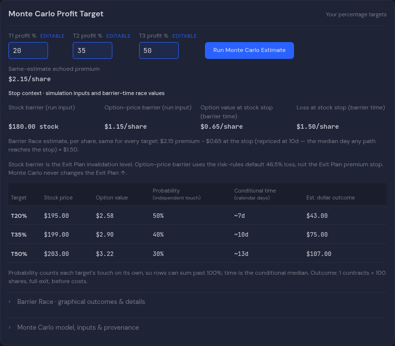
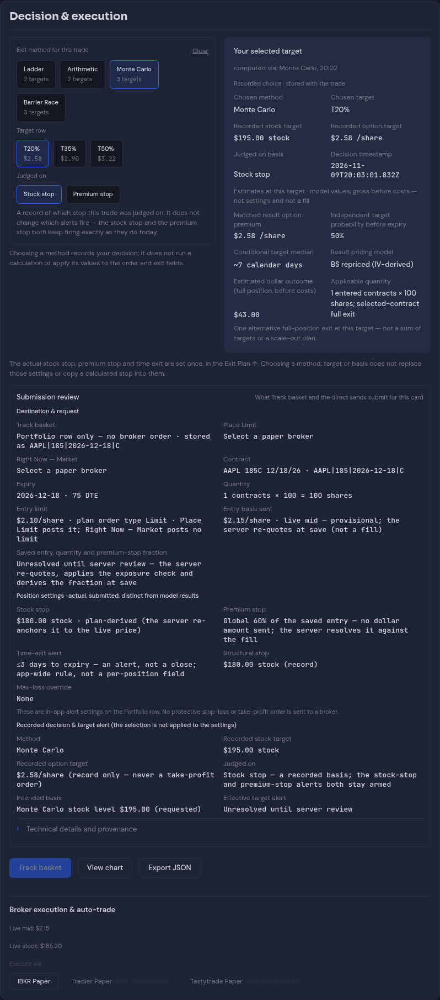

Saved reference

Actual app source:1f09646, merged into the comparison branch atd3f618af. Reference:d8245e66.1366px dark, device scale1, mocked data. The reference is standalone while the app has side rails, so usable widths differ. Compare hierarchy/flow, not the sample amounts. No additional application edits.
Part1 · top · Part2 · methods and entry · Part3 · decisions · Two-method comparison · Expanded Barrier Race




